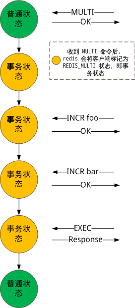

Redis 命令队列
redis 允许一个客户端不间断执行多条命令：发送 MULTI 后，用户键入多条命令；再发送 EXEC 即可不间断执行之前输入的多条命令。因为，redis 是单进程单线的工作模式，因此多条命令的执行是不会被中断的。
> MULTI
OK
> INCR foo
QUEUED
> INCR bar
QUEUED
> EXEC
1) (integer) 1
2) (integer) 1
内部实现不难：redis 服务器收到来自客户端的 MULTI 命令后，为客户端保存一个命令队列结构体，直到收到 EXEC 后才开始执行命令队列中的命令。
下面是命令队列的数据结构：
// 命令结构体，命令队列专用
/* Client MULTI/EXEC state */
typedef struct multiCmd {
// 命令参数
robj **argv;
// 参数个数
int argc;
// 命令结构体，包含了与命令相关的参数，譬如命令执行函数
// 如需更详细了解，参看 redis.c 中的 redisCommandTable 全局参数
struct redisCommand *cmd;
} multiCmd;
// 命令队列结构体
typedef struct multiState {
// 命令队列
multiCmd *commands; /* Array of MULTI commands */
// 命令的个数
int count; /* Total number of MULTI commands */
// 以下两个参数暂时没有用到，和主从复制有关
int minreplicas; /* MINREPLICAS for synchronous replication */
time_t minreplicas_timeout; /* MINREPLICAS timeout as unixtime. */
} multiState;
通由上面给出的 redis 客户端操作，来看看 redis 服务器的状态变化：
> MULTI
OK
> INCR foo
QUEUED
> INCR bar
QUEUED
> EXEC
1) (integer) 1
2) (integer) 1

processCommand() 函数中的一段代码可以窥探命令入队的操作：
// 执行命令
int processCommand(redisClient *c) {
......
// 加入命令队列的情况
/* Exec the command */
if (c->flags & REDIS_MULTI &&
c->cmd->proc != execCommand && c->cmd->proc != discardCommand &&
c->cmd->proc != multiCommand && c->cmd->proc != watchCommand)
{
// 命令入队
queueMultiCommand(c);
addReply(c,shared.queued);
// 真正执行命令。
// 注意，如果是设置了多命令模式，那么不是直接执行命令，而是让命令入队
} else {
call(c,REDIS_CALL_FULL);
if (listLength(server.ready_keys))
handleClientsBlockedOnLists();
}
return REDIS_OK;
}